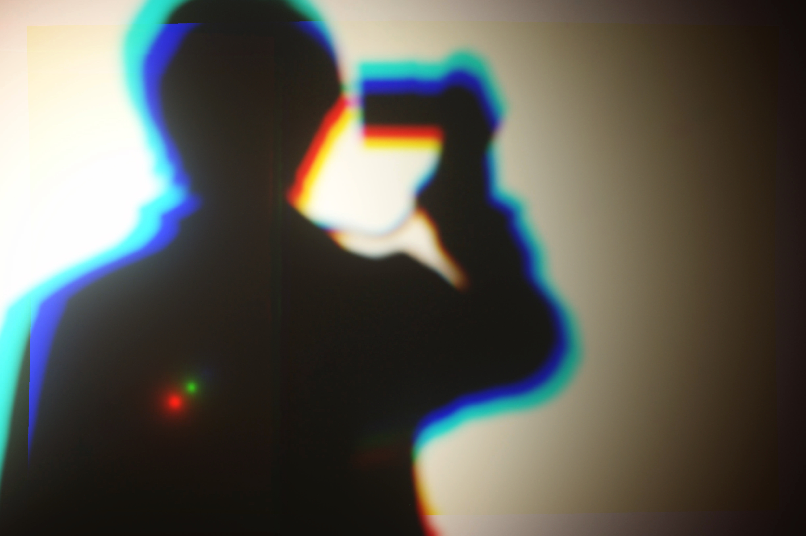

Service
Website
ランディングページの制作
既存コードの改修
既存コードの改修
Application
WindowsFormアプリケーションの開発
Visual Basic 6.0で作製されたプログラムのNETへの移行
Visual Basic 6.0で作製されたプログラムのNETへの移行
Taking Snapshot
宣材写真、素材画像の撮影及び提供
Design
ウェブサイトのカンプ制作
オブジェクト指向UIデザイン化案の提供
アイコン画像、カリグラフィロゴ等の制作
オブジェクト指向UIデザイン化案の提供
アイコン画像、カリグラフィロゴ等の制作
Sound
各種サウンドエフェクト、BGMの制作
Works


Profile

joooya
1993 Born in Utsunomiya City
Lived in Shizuoka - HongKong - Nagoya
Graduated from Nagoya University of Foreign Studies
Studied abroad to Queensland, Australia.
My creativity is thanks to confronting diversity
while my life with migration.
1993 Born in Utsunomiya City
Lived in Shizuoka - HongKong - Nagoya
Graduated from Nagoya University of Foreign Studies
Studied abroad to Queensland, Australia.
My creativity is thanks to confronting diversity
while my life with migration.
Other Activities